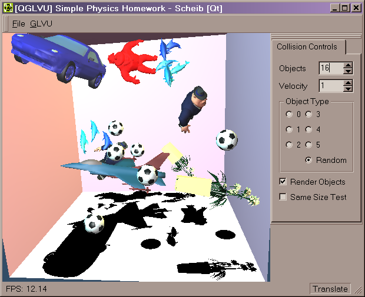
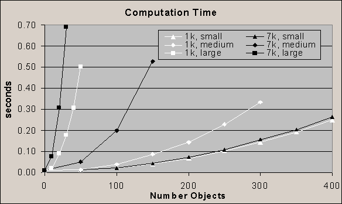
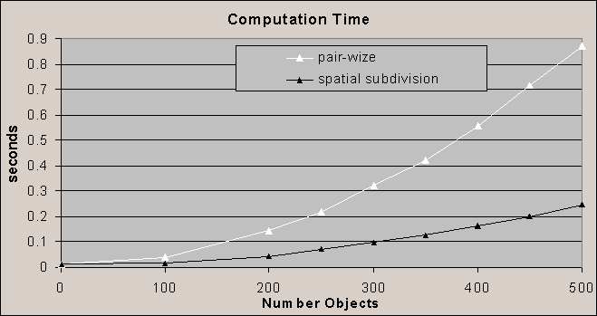

| Homework2: Collision Detection
Summary:
Implement collision detection for several
complex objects moving with different velocities and rotations. Provide
simple motion response upon colliding. Optimize for the case when objects
are all equal size.
Assignment text:
(6 pt) Problem A: Implementation
Write a program to detect collisions among many sphere-like
objects of different sizes flying inside a confined region (e.g. a cube,
a table with boundary, etc.); Each object is given an initial random velocity
and angular velocity. The velocity stays the same unless an object hits
an obstacle (e.g. a wall or another object), in which case a component
of the velocity should be flipped so that the object stays within the confinement.
State your assumptions about the objects! You may wish to reuse and modify
the source code available at: http://www.cs.unc.edu/~geom/collide/packages.shtml
(9pt) Problem B: Analysis
Analyze performance of your algorithm (or implementation)
in different situations.
Change the following parameters and measure computation
time:
-
Number of objects (1~50)
-
Complexity of objects (The number of polygons for each object.
Try at least 3 different data sets)
-
Sizes of objects (The relative size of each object w.r.t..
the extension of the bounding cube.)
Your algorithm (implementation) should exhibit different
characteristics to the variation of these parameters. Present data in tables
and graphs, and explain the differences in performance.
(10pt) Problem C: Varying Parameters
Same as Problem A, except the objects have the same size.
What would you do differently? Show a simple prototype implementation to
compare and contrast the performance of two different algorithms (implementation). |
What I did:
I have created a small program.
download
the program (you need to put qt-mt230nc.dll
in the same directory)
It requires Windows (2000?), openGL, GLVU
(to compile), PQP, and the
QT runtime dll (included).
You can view the source
code. All the simulation code is contained in the main.cpp. The other
files are used for the user interface.
I have implemented a simple system using
PQP (Proximity Query Package). PQP uses Object Oriented Bounding Boxes
(OOBB) for collision detection of arbitrary objects. The objects I used
came from Nate Robin's OpenGL tutors.
They are complex, all of them convex and some of them actually are separate
objects.
The user interface shown in this screen
shot:

Objects flash red when they are in collision,
the model of Al Capone in the top center is colliding with the rear wall.
The objects ranged from 1000 to 7000 triangles.
Analysis:
I have gathered timing for different objects,
scale of objects, and number of objects. These can be seen in this graph:

White and black represent objects with
1692 and 7625 triangles, respectively.
Small signifies that the object scale was
extremely small compared to the environment. In this situation, thousands
of objects can fit within the space and rarely collide with each other.
Medium signifies objects of the size seen
in the screen shot.
Large signifies objects scaled such that
they are always in collision with another object.
These timings are also in this table:
| Num. Obj. |
1k, small |
7k, small |
1k, medium |
7k, medium |
1k, large |
7k, large |
| 400 |
0.25 |
0.26 |
|
|
|
|
| 350 |
0.19 |
0.20 |
|
|
|
|
| 300 |
0.14 |
0.16 |
0.33 |
|
|
|
| 250 |
0.10 |
0.11 |
0.23 |
|
|
|
| 200 |
0.07 |
0.07 |
0.14 |
|
|
|
| 150 |
0.04 |
0.04 |
0.09 |
0.53 |
|
|
| 100 |
0.02 |
0.02 |
0.04 |
0.20 |
|
|
| 50 |
0.01 |
0.01 |
0.01 |
0.05 |
0.50 |
|
| 40 |
0.01 |
0.01 |
0.01 |
0.01 |
0.31 |
|
| 30 |
|
|
|
|
0.18 |
0.69 |
| 20 |
|
|
|
|
0.09 |
0.31 |
| 10 |
|
|
|
|
0.02 |
0.08 |
| 0 |
|
|
|
|
0.01 |
0.01 |
The most significant contribution to computation
time is that of object scale. When objects are of a smaller relative scale,
they rarely are in collision. Thus, the collision detection code must only
infrequently traverse down the bounding box hierarchy. At these scales,
the complexity of the object has little influence on computation time.
The second most influential metric is the
number of objects in the system. A pair wise test must be performed for
all objects during collision detection.
Lastly, but significant during collisions,
the complexity of an object affects the computation time.
Same Size Objects:
If we assume objects are all the same size,
we can perform faster rejection on object collision tests. Specifically,
we can avoid the pair wise test. Knowing the maximum object size, we can
partition space and only check for object collisions for objects sharing
a cell.
One simple way to do this is to make a
grid where each cell is only slightly larger than an object. Then, for
each object, the cell the center resides in is marked as containing that
object. Then, for each cell, every object within a cell is tested for collision
with objects in that and any adjacent cell. (objects may overlap cell boundaries,
but no more than one.) When doing this, care is taken to only check an
object pair once.
Why do this? A pair wise test has quadratic
complexity. It requires N(N-1)/2 object-object tests. However, traversing
the spatial partitioning is linear. Within each cell a pair wise test is
performed, however this is on a very small number of objects (unless the
space is very crowded).

Results are positive. As can be seen in
the graph, the spatial subdivision performs much better -- closer to linear
than the pair wise implementation. |